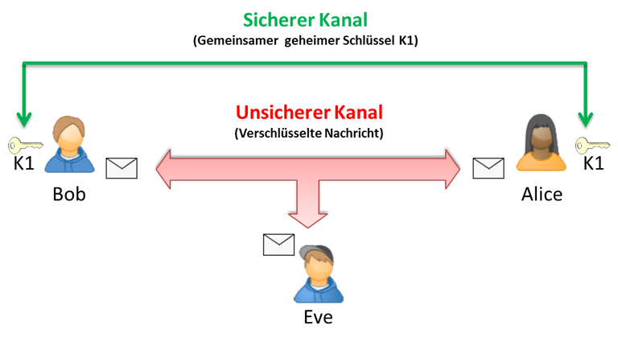
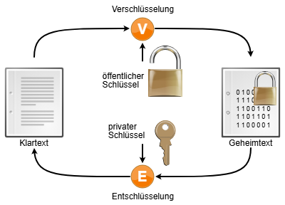

🔑 Verschlüsselung
i
Verschlüsselung sorgt dafür, dass nur Berechtigte Daten lesen können
(Vertraulichkeit). Hashing ist etwas anderes: es prüft, ob Daten
unverändert sind, oder erlaubt einen Vergleich, ohne das Original
preiszugeben (z.B. bei Passwörtern) - ein Hash lässt sich nicht
wieder in die Ausgangsdaten zurückverwandeln.
i
Symmetrisch, asymmetrisch und hybrid verschlüsseln, sicherer Schlüsselaustausch nach Diffie-Hellman, sowie Hashing und Salt - mit Beispielen, Grafiken und zwei echten Live-Demos (SHA-256 läuft direkt in deinem Browser, es wird nichts übertragen).
📺 Vertiefung: Verschlüsselungsverfahren (symmetrisch, asymmetrisch, hybrid) (task media)
Warum überhaupt verschlüsseln?
i
Unverschlüsselte Daten im Netzwerk sind wie eine Postkarte: jeder,
der sie unterwegs in die Hand bekommt, kann sie einfach lesen.
Verschlüsselte Daten sind wie ein versiegelter Brief in einem
blickdichten Umschlag - der Inhalt ist erst nach dem "Öffnen"
(Entschlüsseln) mit dem passenden Schlüssel lesbar.
i
Verschlüsselung wandelt lesbaren Klartext mithilfe eines Schlüssels in unlesbaren Geheimtext (Ciphertext) um. Nur wer den richtigen Schlüssel besitzt, kann den Vorgang umkehren. Es gibt dafür zwei grundlegend verschiedene Ansätze - symmetrisch und asymmetrisch - die in der Praxis meist kombiniert werden (hybrid, siehe unten).
Symmetrische Verschlüsselung (z.B. AES)
i
Wie ein Vorhängeschloss mit genau EINEM Schlüssel: derselbe
Schlüssel schliesst zu UND wieder auf. Beide Seiten müssen diesen
einen Schlüssel vorher besitzen - das eigentliche Problem ist also
nicht das Verschlüsseln selbst, sondern wie beide Seiten sich
sicher auf denselben Schlüssel einigen, ohne dass ihn jemand
unterwegs mitliest.
i
Ein einziger geheimer Schlüssel wird sowohl zum Ver- als auch zum Entschlüsseln verwendet. Der reale Standard dafür ist AES (Advanced Encryption Standard, meist mit 128 oder 256 Bit Schlüssellänge) - eingesetzt z.B. bei Festplattenverschlüsselung (BitLocker), WLAN (WPA2/3) und für die eigentlichen Nutzdaten bei HTTPS und VPN.

Vorteil: sehr schnell, auch für grosse Datenmengen geeignet. Nachteil: der Schlüssel muss vorab sicher zwischen beiden Seiten ausgetauscht werden ("Schlüsselverteilungsproblem") - genau das löst Diffie-Hellman weiter unten.
Asymmetrische Verschlüsselung (Public-Key, z.B. RSA)
i
Stell dir einen Briefkasten mit einem offenen Schlitz vor
(öffentlicher Schlüssel): jeder darf etwas einwerfen, aber nur wer
den Kasten mit dem passenden Schlüssel aufschliessen kann
(privater Schlüssel), kommt wieder an den Inhalt. Den offenen
Schlitz darf jeder kennen - den Aufschliess-Schlüssel nur der
Besitzer.
i
Statt einem gemeinsamen Schlüssel besitzt jede Seite ein mathematisch zusammengehöriges Schlüsselpaar: einen öffentlichen Schlüssel (Public Key, darf jeder kennen) und einen privaten Schlüssel (Private Key, bleibt geheim). Was mit dem einen verschlüsselt wird, kann nur mit dem jeweils anderen wieder entschlüsselt werden.

i (Vertiefung: vereinfachtes Zahlenbeispiel)
Primzahlen p=3, q=11 → n = p·q = 33.
Öffentlicher Schlüssel: (n=33, e=7). Privater Schlüssel: d=3.
Nachricht m=2 verschlüsseln: c = me mod n = 27 mod 33 = 29
Entschlüsseln: m = cd mod n = 293 mod 33 = 2 ✓ (Original zurück)
Bei n=33 könnte ein Angreifer die Primfaktoren 3 und 11 durch Ausprobieren in Sekunden finden und damit d berechnen. Bei echtem RSA ist n eine Zahl mit hunderten Stellen - die Primfaktorzerlegung dauert dann selbst mit Supercomputern länger als das Universum alt ist. Genau darauf beruht die Sicherheit von RSA.
Nachteil: rechenintensiv und deutlich langsamer als symmetrische Verfahren - für grosse Datenmengen ungeeignet. Zusätzlicher Nutzen: "umgekehrt" angewendet (mit dem privaten Schlüssel signieren, mit dem öffentlichen prüfen) entstehen digitale Signaturen - genau das nutzt DKIM im Modul E-Mail-Sicherheit.
Hybrid-Verschlüsselung: das Beste aus beidem
i
Wie ein Tresor mit zwei Schlössern: das langsame, aber
fälschungssichere Schloss (asymmetrisch) wird nur einmal benutzt,
um den schnellen Alltagsschlüssel (symmetrisch) sicher zu
übergeben - danach läuft alles über den schnellen Schlüssel.
i
Praktisch jede reale Verschlüsselung im Internet - allen voran HTTPS/TLS und auch VPN (siehe Modul VPN-Grundlagen) - kombiniert beide Verfahren, um deren jeweilige Schwäche auszugleichen:
Der teure, langsame asymmetrische Teil kommt also nur EINMAL beim Verbindungsaufbau zum Einsatz - und selbst dafür wird in der Praxis meist kein Schlüssel direkt verschlüsselt übertragen, sondern ein Diffie-Hellman-Austausch genutzt (siehe nächster Abschnitt), damit nicht mal ein aufgezeichneter Verkehr später entschlüsselt werden kann, selbst wenn der private Schlüssel des Servers künftig doch noch geknackt werden sollte.
Diffie-Hellman-Schlüsselaustausch
i
Die klassische Farbmisch-Analogie: Alice und Bob einigen sich
öffentlich auf eine Grundfarbe (z.B. Gelb). Jede Seite mischt
heimlich ihre eigene Geheimfarbe dazu und schickt nur das
Mischresultat (nicht die Geheimfarbe selbst!) an die andere
Seite. Beide mischen nun ihre eigene Geheimfarbe erneut in das
empfangene Gemisch - am Ende kommen beide auf exakt dieselbe
Endfarbe, ohne dass ihre jeweilige Geheimfarbe je übertragen
wurde. Farben lassen sich (im Gegensatz zu den echten Zahlen)
nicht zurückmischen - genau das macht die Analogie anschaulich.
i
Diffie-Hellman (DH) löst das Schlüsselverteilungsproblem der symmetrischen Verschlüsselung: zwei Seiten können sich über einen komplett unsicheren, öffentlich mitlesbaren Kanal auf einen gemeinsamen geheimen Schlüssel einigen - ohne diesen Schlüssel selbst jemals zu übertragen.
Beide Seiten landen am Ende bei identischer Farbe (gleiche Zutaten in unterschiedlicher Reihenfolge gemischt ergeben dasselbe Ergebnis) - ein Lauscher sieht auf dem "öffentlichen Transport"-Weg immer nur die beiden Mischfarben, nie die geheimen Eigenfarben selbst.
i (Vertiefung: vereinfachtes Zahlenbeispiel)
Alice wählt geheime Zahl a=6, berechnet A = ga mod p = 56 mod 23 = 8 und schickt A öffentlich an Bob.
Bob wählt geheime Zahl b=15, berechnet B = gb mod p = 515 mod 23 = 19 und schickt B öffentlich an Alice.
Alice berechnet: Ba mod p = 196 mod 23 = 2
Bob berechnet: Ab mod p = 815 mod 23 = 2
Beide kommen unabhängig voneinander auf denselben gemeinsamen Schlüssel (2), obwohl nur p, g, A und B öffentlich übertragen wurden - a und b blieben immer geheim. Ein Lauscher, der nur p, g, A und B kennt, müsste dafür a oder b zurückrechnen (diskreter Logarithmus) - bei echten, sehr grossen Zahlen praktisch unmöglich.
Hashfunktionen (z.B. SHA-256)
i
Ein Hash ist wie ein Fingerabdruck: aus beliebig grossen Daten
entsteht ein kurzer, fester "Abdruck". Zwei identische Daten
ergeben immer denselben Fingerabdruck, aber aus dem Fingerabdruck
allein lässt sich nicht auf die Originaldaten zurückschliessen -
im Gegensatz zur Verschlüsselung gibt es hier absichtlich KEINEN
Weg zurück.
i
Hashing ist keine Verschlüsselung - es gibt keinen Schlüssel und keine Entschlüsselung. Eine Hashfunktion wie SHA-256 wandelt beliebig grosse Eingaben in einen Wert fester Länge (bei SHA-256 immer 256 Bit = 64 Hex-Zeichen) um, mit drei zentralen Eigenschaften:
| Eigenschaft | Bedeutung |
|---|---|
| Deterministisch | dieselbe Eingabe ergibt immer exakt denselben Hash |
| Einweg-Funktion | vom Hash lässt sich nicht auf die Eingabe zurückschliessen |
| Avalanche-Effekt | schon 1 verändertes Zeichen ergibt einen komplett anderen Hash |
| Kollisionsresistent | praktisch unmöglich, zwei verschiedene Eingaben mit demselben Hash zu finden |
-
Probier's aus: ändere nur ein einziges Zeichen in der Eingabe und beobachte, wie sich der komplette Hash-Wert ändert (Avalanche-Effekt).
Typische Anwendungen von Hashing:
- Datei-Integritätsprüfung nach dem Download (Checksumme vergleichen)
- Passwort-Speicherung (nie im Klartext, siehe nächster Abschnitt zu Salt)
- Digitale Signaturen: nicht die ganze Nachricht wird signiert, sondern nur ihr Hash (schneller)
- Git: jeder Commit wird über einen Hash seines Inhalts eindeutig identifiziert
Salt: warum reines Hashing für Passwörter nicht reicht
i
Ohne Salt: wenn zwei Nutzer dasselbe Passwort "123456" verwenden,
haben sie in der Datenbank exakt denselben Hash-Wert - ein
Angreifer mit einer vorab berechneten Liste häufiger Passwörter
samt ihrer Hashes (Rainbow-Table) findet das Passwort dadurch
sofort. Mit Salt bekommt jeder Nutzer eine eigene, zufällige
"Würze" dazugemischt - identische Passwörter ergeben dann
unterschiedliche Hashes, und die Rainbow-Table wird nutzlos.
i
Ein Salt ist ein zufälliger Wert, der vor dem Hashen an das Passwort angehängt wird und zusammen mit dem Hash (nicht geheim!) gespeichert wird. Bei der Anmeldung wird derselbe Salt wieder an die Eingabe angehängt und erneut gehasht - stimmt das Ergebnis mit dem gespeicherten Hash überein, war das Passwort korrekt.
| Wert | Ergebnis |
|---|---|
| Aktueller Salt | - |
| Hash OHNE Salt | - |
| Hash MIT Salt | - |
Erzeuge mehrfach einen neuen Salt bei gleichbleibendem Passwort: der "Hash OHNE Salt" bleibt immer identisch, der "Hash MIT Salt" ändert sich jedes Mal komplett - genau das macht vorab berechnete Rainbow-Tables wirkungslos.
In der Praxis reicht sogar Salt allein oft nicht: moderne Verfahren wie bcrypt oder Argon2 bringen Salt automatisch mit und sind zusätzlich absichtlich langsam/rechenintensiv gestaltet ("Key Stretching"), um Brute-Force-Angriffe massiv auszubremsen - ein schneller Hash wie reines SHA-256 ist für Passwörter allein nicht empfehlenswert.
Überblick: Wo wird was eingesetzt?
| Anwendung | Verfahren | Warum |
|---|---|---|
| HTTPS/TLS-Verbindung | Hybrid (asymmetrisch/DH für Schlüsselaustausch, dann symmetrisch) | Sicherer Schlüsselaustausch + hohe Geschwindigkeit für die Daten |
| VPN (IPSec/SSL-VPN) | Hybrid, DH-Schlüsselaustausch (siehe VPN-Grundlagen) | Gleiches Prinzip wie TLS, für ganze Netzwerktunnel |
| Passwort-Speicherung | Hash + Salt (idealerweise bcrypt/Argon2, nicht reines SHA-256) | Einweg-Funktion, Schutz vor Rainbow-Tables und Brute-Force |
| Datei-Integritätsprüfung | Hash (z.B. SHA-256-Checksumme) | Erkennt zuverlässig jede Veränderung, Geschwindigkeit ist hier egal |
| Digitale Signatur / DKIM | Asymmetrisch (Hash der Nachricht mit Private Key signieren) | Nachweis von Authentizität, siehe E-Mail-Sicherheit |
| Festplattenverschlüsselung (BitLocker) | Symmetrisch (AES) | Grosse Datenmengen, Geschwindigkeit entscheidend |